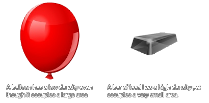

physics_fixture_set_density(fixture, density)
| Argument | La description |
|---|---|
| fixture | l'index de l'appareil |
| density | la densité de l'appareil calculée en kg / m² |
Retours: N / A
La densité de quelque chose est définie comme sa masse par unité de volume, ce qui signifie essentiellement combien de masse est entassée dans l'espace qu'il occupe dans le monde. Ainsi, un ballon aurait une faible densité car il a peu de masse qui occupe un grand espace, alors qu'une barre de plomb aurait une densité élevée car elle a une grande masse, mais occupe peu d'espace.

Dans GameMaker Studio 2, la masse du monde de la physique 2D est calculée automatiquement pour vous à partir des valeurs que vous avez saisies pour la densité et de la surface de la forme que vous définissez pour l'appareil. Cela aura un impact direct sur l'inertie d'un luminaire ainsi que sur la façon dont il réagit aux collisions et aux forces, donc si vous faites une petite forme avec une densité élevée, il aura une très grande masse (comme une barre de plomb), mais si vous définissez une grande forme avec une faible densité, elle aura une masse beaucoup plus petite (comme un ballon).
Note: Si vous souhaitez que l'instance qui va recevoir le projecteur soit statique (ie: immobile dans le monde du jeu) alors la densité devrait être mise à 0, en lui donnant essentiellement une densité infinie.
physics_fixture_set_density(fix_Balloon, 0.1);
Le code ci-dessus fixera la densité de l'appareil indexé dans "fix_Ballon" à 0.1.